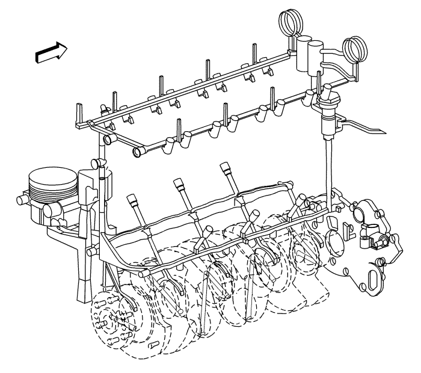

Descripción de la lubricación — LDE, LED, LFJ, LXV, 2H0, LUW

Se aplica aceite a presión al cigüeñal, bielas, regulador del árbol de levas, superficies de apoyo de los árboles de levas y taqués de válvulas. Todas las partes móviles se lubrican mediante flujo por gravedad o salpicadura. El aceite entra en la bomba de aceite rotativa a través de un filtro de entrada fijo. La bomba de aceite es accionada por el cigüeñal El cuerpo de la bomba de aceite está dentro de la cubierta delantera del motor. El aceite presurizado de la bomba pasa por el sistema de refrigeración de aceite y el filtro de aceite. El filtro de aceite está integrado en la carcasa del sistema de refrigeración de aceite que va conectada a la parte delantera del bloque motor. El filtro de aceite es de tipo cartucho desechable. Una válvula de derivación en la caperuza del filtro permite un flujo de aceite flexible si se obstruyera el filtro de aceite. Los cojinetes de la varilla de unión se engrasan mediante el paso constante de aceite por el cigüeñal que conecta los muñones principales a los muñones de la varilla. Una ranura alrededor de cada uno de los cojinetes de bancada superiores proporciona aceite a los pasos perforados del cigüeñal. El aceite a presión pasa a través del orificio restringido de la culata del cilindro a la culata del cilindro, y después a cada galería de alimentación del árbol de levas. En el extremo se instala un sensor o interruptor de presión del aceite. El aceite regresa al cárter del aceite a través de pasos de fundición en la culata.
| © Copyright Chevrolet. All rights reserved |